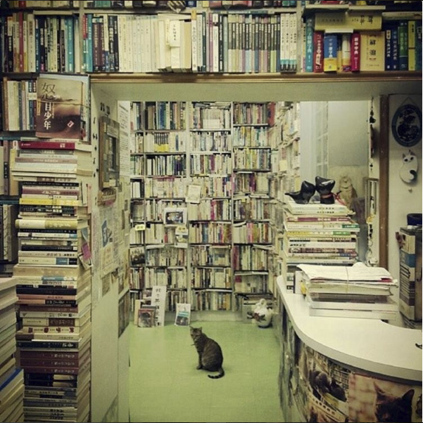

The Winter Garden
x
A British winter is a glorious thing. No, really - it’s not all overcast skies, barely-there rain and freezing cold.
Ok fine, I admit the winter months are when the UK seems to be at its least splendid. In Spring, the new lambs bleat, and snowdrops and bluebells blanket the once bare swathes of grass. Summer brings charms of goldfinches (my favourite collective noun, by the way) that roll over the lawn, devouring the precious dandelion seeds that are scattered across. And in autumn the eruption of green that grew in the previous months slowly withers - the collective swan song of nature. But winter, the time between the dramatic death and the glorious rebirth of the seasons, has little to offer, at least on the surface.
I first came to the UK when I was 9. At the time I felt I had been snatched away from a paradise, a land where cockatoos gorged on our mandarin tree in the back garden, where the sun never hid behind the clouds, and where my lips were a constant dark purple stained from mulberries.The new land I was taken to was cold, overcast, and with a people who’s attitudes matched the weather. We moved to a house in the country with a large garden that backed onto a river. The house was surrounded by rose beds and vegetable gardens, stocked with unfamiliar berries and vegetables. I remember optimistically asking my mum "What can we grow in the winter time here?", only to receive the answer: "Not much grows here in the depths of winter". I now realise these words were only half true.
It took a few years to get over the initial shock of colder climes, but I’ve now finally managed to find a corner of the world that I’m happy to call home. The house I live in now is nestled in the hills of the Scottish Borders, and faces the expanse of the North Sea. On clear nights I sit up and watch the lights from the ships that pinprick the inky water, and the stars that spill across the sky. We’re remote, but I’ve grown to love that, and nowhere else do I feel so connected to nature. But the stunning views only formed part of my parents’ decision to buy the Old Farm House. They bought it for the sheer potential it held – the house sits atop a large garden and has a few more acres in fields. My parents used to own an allotment and were desperate to get back to nature and grow their own food. I had grown up with the farm simulation game ‘Harvest Moon’, so was myself keen to use my hard-earned virtual skills in the real world.
Our first few years in the house were spent digging up stones and laying foundations. The garden had been neglected - through no fault of its previous owners - and for months we toiled, digging up rocks, setting up beds and getting ready for the glut of vegetables, berries and apples that was to come. Our labour brought life to the ground, and what once was barren and sparse is now teaming with life. The area within our garden walls has more wildlife than the miles surrounding it, and a garden that echoes with birdsong certainly is ample reward for our months of hard work. The garden encourages us to work alongside nature, instead of against it. I love the romance of this idea, however the reality is often more difficult to accept. It’s hard not to curse the army of slugs that each year descends upon the garden to devour the greens we so lovingly grew, or the birds who flock to the over turned earth, harvesting the precious seeds we plant. But, as gardeners, we must understand that the additional wildlife, whether they be pests or not, is simply nature’s approval of our hard work. Besides, our sacrifice of crops is sometimes willing. We happily surrender a few cabbages to the aptly named cabbage butterflies, mainly because they’re so pretty and our garden benefits from the flapping of their delicate wings. But ugly things deserve a place in our garden too, as any gardener relishes soil that crawls with wriggling earthworms, who work diligently to keep the ground in top condition.
Although I paint a dreamy image of a symbiotic relationship in which man and nature work in harmony, the truth is perhaps less idealistic. Working alongside nature in this way has made me question my standing in the natural world, and I fully realise that I have created in my head this romance that simply isn’t there. Although we may try our hardest to work alongside the world around us, our relationship with nature will always be one-sided, an unrequited love. We may tell ourselves that the birds learn to recognise our voices, or that the sheep would notice if one day we didn’t come, but they simply don’t. The relationship is all the more powerful for that. At the core, we’re simply onlookers to nature and are totally at its mercy. And if we weren’t there, things would simply keep ticking over, albeit in a slightly different form to the one we know now. It’s a humbling thought.
And so I continue to try to accept my position as a mere onlooker in this world. Strangely enough, I feel most comfortable in this role in the winter months – the time of year I used to loath. There are no two ways about it; winter life in the UK countryside is tough. The beauty is sapped from our surroundings, and we are enveloped in a thick darkness with no street lamps to penetrate it. In my teenage years I began to resent winter, it was at this time that I became most nostalgic for the blistering Australian skies from which I had come. I dreaded the first frosts and the changing of the clocks, but slowly I’ve grown to realise that the winter season is just as important and just as beautiful as all the others. In fact, now I almost enjoy it. It is in winter that I now feel most connected to the wildlife around me, in whatever one-sided way it may be. The cold weather allows me a glimpse into the hidden world from which I’m normally excluded as bare hedges reveal a secret world of birds’ nests knotted among the branches, and I watch the sparrows move up and down their now visible highways on the naked branches. In many ways, I find that the landscape of this time of year accentuates the beauty it contains: the vibrant colour of a yellowhammer or the deep red of a robin’s breast look almost exotic against the dull, scrubby green of the winter fields. It requires patience, but winter offers some of the UK’s most beautiful scenes to us onlookers.
And then I come to the garden. All those years ago I thought that winter was simply a gap between the growing seasons. But to the trained gardener (which I, sadly, cannot call myself) the winter garden offers an abundance of parsnips, carrots, winter cabbages and brussel sprouts, and there is something very satisfying about being able to harvest life from the frozen soil. I still have a lot to learn about gardening, in any season, but I hope that one day I will possess the planning effort and forward thinking that all good gardeners employ to keep themselves in winter greens in the dark months. Although a winter garden has the ability to yield crops (albeit only children’s least favourite vegetables), it is true that it’s the least plentiful season, and I know many people think that the winter garden is a dead garden. But the garden doesn’t die - it sleeps, suspended in time, waiting for the first rays of spring to wake it from its languid state. Crops slumber in the soil and awaken only when spring finally comes. The bulbs we planted come to life too in the spring, and pretty daffodils and tulips sprout up in the bare lawns. It’s funny - when we planted the bulbs, we hid these lifeless, brown orbs deep under the soil and forgot about them, but still they grew, surprising us with their tenacity and vibrant colours. But I think that’s what I’ve learnt to embrace the most about the winter garden – its most redeeming feature is its potential and its hope. On one of our foraging trips to find where the hen, Bessie, had decided to lay her eggs this time, I lifted up a bare scrub of bush hoping to find a clutch of eggs. Instead, I found several tiny green triangles poking out of the deep, cold soil – the first vibrant colour of the monochrome season. Having struggled with severe depression for far too many years of my life, it’s a beautiful reminder that beauty grows in shade and in darkness life still prevails.
For me, learning to love the winter garden was not only an exercise in accepting life in the UK, but also accepting my own happiness and the illness that afflicts me. Happiness, like the changing of the seasons, is never constant and you can only get the glorious highs if you’re willing to undergo the troughs. It works best when one perseveres to find the beauty in whatever situation arises.
|

Seasons
x
春
snell wind whips across
hunched shoulders flecked with light rain
first fall of April
夏
sole beats down on earth
parched and dusty it exhales
welcomed by chorus
秋
mist coats the landscape
footprints on the dewy grass
swan song of nature
冬
the time of slumber
layer of white on dark earth
roots sleep in the soil
|
|

Chickens and Other Things
x
You were always where we didn't want you,
Scratching among the seeds
You pecked at blueberries and brambles
And turned over the soil,
But with every step I took you followed,
Cooing at my feet,
You led me to your secret clutches
Of white jewels in the scrub.
And now you’ve left I miss your mischief,
Your chirps behind each step,
Your knotting in between my ankles
And pecking at our crops,
Our garden may be full without you,
Our berries left to ripen,
But the walls are quiet without your crowing,
The slugs left to flourish,
So i miss your constant scratching and clawing,
Your trails left in the earth,
Our garden will always be empty without you
And your gentle chirps.
|

Walking Trails
x
In October 2015 I left the busy lights of Kyoto behind to set forth on my own adventure in rural Japan. Armed with nothing but wanderlust, I navigated the maze of city trains to find my home for the next few hours. As we set off, the view became much more rural as the city sloped away. First we passed through smaller towns and cities, then tiny fishing villages, until finally nothing but the countryside stretched out either side around us. After a few hours we reached my stop, Tanabe, and I changed onto a rickety bus that twisted away from the coast and up the mountains. We would duck into dark mountain paths and each time the bus would gasp for air on the other side of the tunnel, I would catch a glimpse of the scenery, hills coated with tall fir tress, glistening water and blistering blue sky, before being plunged once again into the dark depths of the mountain tunnel. One last time rolled out of the darkness and the bus driver pulled up and looked at me expectantly. With my rudimentary Japanese, I surmised that this was my stop and, laden with bags, I exited the bus. As it drove away I realised that I was completely alone, and this wouldn’t be the first time I had this realisation. Now I could hear no man made sounds. Only the trickling of the river, the craw of the birds, and the rustling of unseen creatures in the bushes that fled at my approach. I crossed the nearby bridge and stood to admire my surroundings. The landscape engulfed me: rolling hills painted bright green with the trees that lined them, and a wide streaming river with crystal clear water. I stood for several minutes watching the intricate patterns the several schools of fish made in the water beneath me before moving onto the small shrine that lay at the foot of the pilgrimage route. The trail rose before me.
|

Welsh Translations
x
To sit here on this hill burdens my mind,
and yet I’m not stirred into turmoil,
my journey’s short, abandoned my homeland
The wind blows fierce on me, faded herdsman,
and though the forest clothes itself in fair
and summer hues, I am very sick tonight
I’m slow on my feet, no army surrounds me,
no longer can I wander,
For as long as the cuckoo pleases, let her sing!
the noisy cuckoo sing with the daytime,
her heavy song, it echoes in the dales.
It’s better to be kind than a miser
In Aber Cuawg the cuckoos sing their songs
on blossomed branches
Oh noisy cuckoo, sing on!
In Aber Cuawg the cuckoos sing their songs
on blossomed branches
this wretched leper hears them constantly
In Aber Cuawg the cuckoos are singing
it pains my heart,
the one who heard them hears them no more
I heard a cuckoo on an ivied tree
my clothes now loose on frail and withered form
mourning more for that which I once loved
|